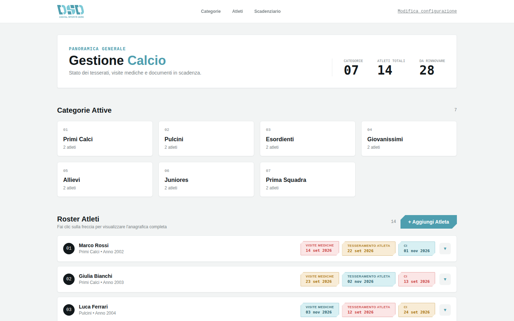

Calcio
«Il collo di bottiglia è in autunno: centinaia di certificati arrivano insieme, spesso come foto sfocate su WhatsApp.»
A.C. CastelverdePer le Associazioni Sportive Dilettantistiche
Digital Sports Desk è la piattaforma per archiviare tesseramenti, certificati medici e consensi delle Associazioni Sportive Dilettantistiche di Cremona e Brescia — senza più fogli sparsi, WhatsApp e ansia da scadenza.
Progettato insieme a chi vive la segreteria ogni giorno

Il problema
Certificati scaduti, moduli firmati a mano, foto sfocate su WhatsApp: nelle segreterie dilettantistiche l'informazione è sparsa ovunque, e un solo documento mancante può costare una partita — o una sanzione.
Tra fine agosto e metà ottobre la segreteria riceve centinaia di certificati e tesseramenti in poche settimane.
Le piattaforme federali attestano, ma non ricordano: nessuno avvisa le famiglie della scadenza in arrivo.
Un'idoneità scaduta non gestita espone l'atleta e il presidente dell'ASD a sanzioni disciplinari e civili.
Come funziona
Non un modulo infinito, ma tre schermate su misura per chi le usa davvero.
La ricerca sul campo
Prima di disegnare una sola schermata, abbiamo ascoltato chi vive la segreteria ogni giorno: calcio, basket, pallavolo e sport di racchetta, nel territorio tra Cremona e Brescia.
«Il collo di bottiglia è in autunno: centinaia di certificati arrivano insieme, spesso come foto sfocate su WhatsApp.»
A.C. Castelverde«Serve uno strumento consultabile dallo smartphone, a bordo campo, pochi minuti prima della partita.»
Ju-Vi Ferraroni Cremona — M. AbbiatiPerché DSD
Non un brief in astratto: nasce da interviste vere con società di calcio, basket, pallavolo e sport di racchetta tra Cremona e Brescia.
Contrasti verificati WCAG 2.2, minimizzazione e consensi separati, in linea con GDPR e Riforma dello Sport.
Pensato prima per lo smartphone a bordo campo, poi per il desktop in segreteria: solo i dati che servono, quando servono.
Il portale
Il portale DSD è online: dashboard, scadenziario e roster atleti, pronti da esplorare.
Entra nel portale